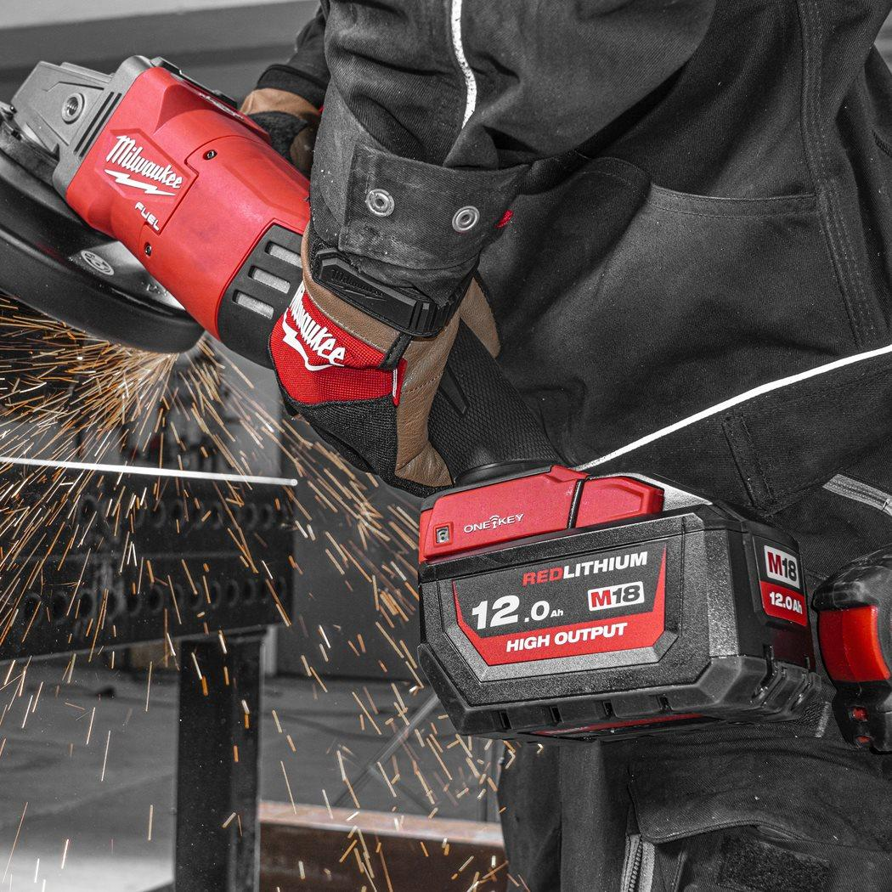
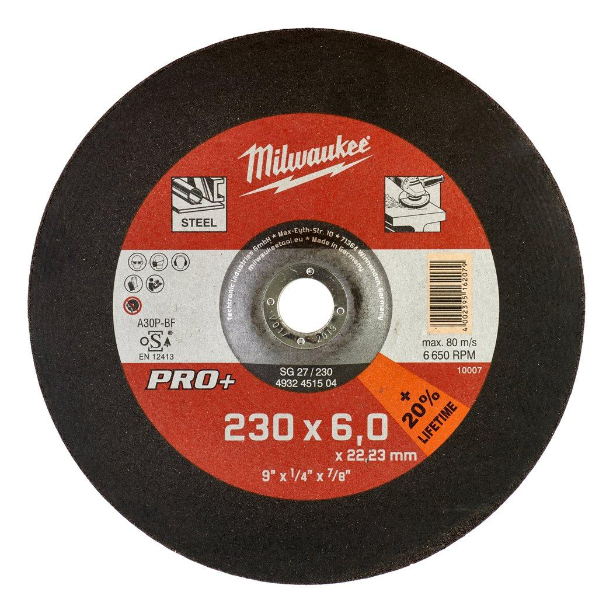

<div style="display:flex;flex-wrap:wrap;gap:8px"></div><h2>Features</h2><div><ul><li>Applications: Sound performance in mild steel and non alloy tool steel.</li><li>Characteristics: Provides good lifetime and efficient grinding characteristics.</li></ul></div><div><div><h2>Information</h2><table><tr><td>Bore size (mm)</td><td>22.2</td></tr><tr><td>Description</td><td>SG 27 / 230</td></tr><tr><td>Disc diameter (mm)</td><td>230</td></tr><tr><td>Pack quantity</td><td>1</td></tr><tr><td>Profile</td><td>SG 27 / 230</td></tr><tr><td>Thickness (mm)</td><td>6</td></tr><tr><td>Article Number</td><td>4932451504</td></tr><tr><td>EAN</td><td>4002395162079</td></tr></table></div></div>